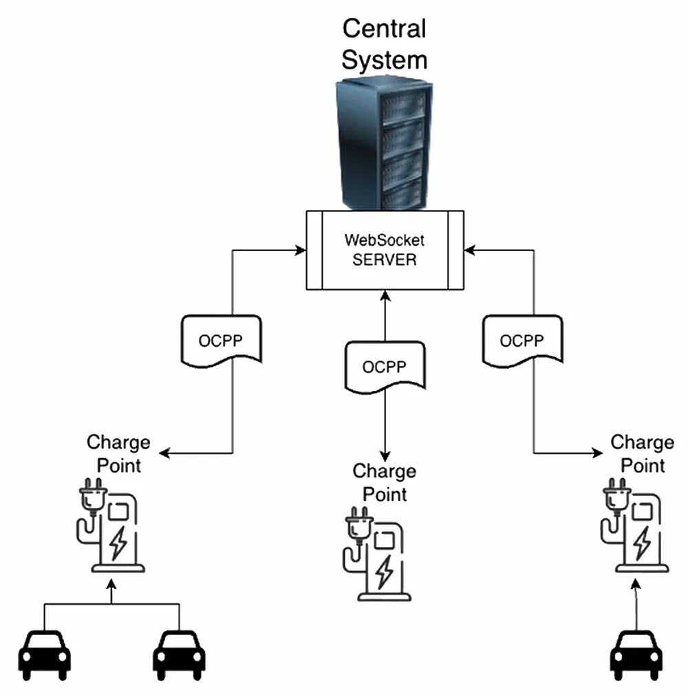

资源
正文
1 Scope

OCPP 是一种定义在充电桩（Charge Point）与中央系统（Central System）之间使用的协议。要求一方或另一方采取某种行动或作出某种回应。
OCPP 并未定义通信技术。任何技术都可以，只要它支持 TCP/IP 连接。
3 Introduction
标准的充电流程
sequenceDiagram
participant CP as Charge Point
participant CS as Central System
CP->>CS: Authorize.req(idTag)
CS-->>CP: Authorize.conf(idTagInfo)
Note over CP: Start Charging
CP->>CS: StartTransaction.req(connectorId, idTag, meterStart, timestamp, [reservationId])
CS-->>CP: StartTransaction.conf(idTagInfo, transactionId)
Note over CP: Charging...
CP->>CS: Authorize.req(idTag)
CS-->>CP: Authorize.conf(idTagInfo)
Note over CP: Stop Charging
CP->>CS: StopTransaction.req(meterStop, timestamp, transactionId, [reason], [idTag], [transactionData])
CS-->>CP: StopTransaction.conf(idTagInfo)
典型的 OCPP 充电流程时序图，包括 Authorize → StartTransaction → Charging → StopTransaction。
-
在为电动汽车充电时，需要先对用户进行身份验证，然后才能开始充电。
-
如果用户获得授权，充电点就会通知中央系统它已开始充电。
-
当用户结束充电时，如果充电桩已经确认该用户有权限结束交易，就直接发送 StopTransaction 消息给中央系统，不要再去重新发送 Authorize 请求。
- 如果提交的
idTag与开始交易时提交的idTag相同，则充电点在停止交易前不得发送Authorize.req。
- 如果提交的
充电桩需要更新时
sequenceDiagram
participant CP as Charge Point
participant CS as Central System
CP->>CS: UpdateFirmware.req(location, retrieveDate, [retries], [retryInterval])
CS-->>CP: UpdateFirmware.conf()
Note over CP: Downloading firmware...
CP->>CS: FirmwareStatusNotification.req(status: Downloaded)
CS-->>CP: FirmwareStatusNotification.conf()
Note over CP: Installing...
CP->>CS: FirmwareStatusNotification.req(status: Installed)
CS-->>CP: FirmwareStatusNotification.conf()
Note over CP: Reboot
CP->>CS: BootNotification.req(chargePointModel, chargePointVendor, [chargeBoxSerialNumber], [chargePointSerialNumber],[firmwareVersion], [iccid], [imsi], [meterSerialNumber], [meterType])
CS-->>CP: BootNotification.conf(currentTime, heartbeatInterval, status)
如果充电桩需要安装新固件，中央系统会通知充电桩开始下载新固件的时间。充电桩应在下载和安装新固件的每个步骤后通知中央系统。
本地授权与离线行为
sequenceDiagram
participant Charge Point
participant Central System
Charge Point->>Central System: SendLocalList.req (listVersion: 234, updateType: Full, [localAuthorizationList])
Central System-->>Charge Point: SendLocalList.conf (status: Accepted)
完整本地授权列表更新示例。
sequenceDiagram
participant Charge Point
participant Central System
Charge Point->>Central System: GetLocalListVersion.req()
Central System-->>Charge Point: GetLocalListVersion.conf( listVersion: 234 )
Charge Point->>Central System: SendLocalList.req( listVersion: 239, updateType: Differential, [AuthorisationData] )
Central System-->>Charge Point: SendLocalList.conf( status: Accepted )
差异化本地授权列表更新示例。
如果中央系统不可用，充电点是否还能工作取决于是否启用了本地授权列表 localAuthorizationList 以及充电点的具体配置：
- 如果启用了本地授权列表：充电点可以在中央系统不可用的情况下继续工作，因为它可以依赖保存在非易失性内存中的本地授权列表来进行授权决策。列表中的标识符状态（有效、过期、阻止或黑名单）允许充电点独立处理本地授权请求，而无需实时与中央系统通信。
- 如果未启用本地授权列表：充电点将无法进行授权，因为它需要中央系统的实时响应来验证标识符。在这种情况下，充电点可能无法正常提供服务，直到中央系统恢复可用。
此外，充电点通过 LocalAuthListEnabled 配置键报告和控制本地授权列表的启用状态。如果此功能未启用或配置不当，中央系统不可用将导致服务中断。因此，充电点的独立工作能力依赖于事先正确配置和维护本地授权列表。
授权缓存（Authorization Cache）和本地授权列表（Local Authorization List）
两者的区别：
- 授权缓存和本地授权列表是两个独立的数据结构，逻辑上分开管理。
- 它们分别用于不同的授权处理机制，彼此之间不共享相同的标识符数据。
数据隔离规则：
- 本地授权列表中已知的标识符不得被添加到授权缓存中。这确保了两者数据结构的独立性，避免重复或冲突。
优先级规则：
- 如果充电点同时支持授权缓存和本地授权列表，对于相同的标识符，本地授权列表中的条目具有更高的优先级。
- 这意味着，在授权决策中，充电点会优先考虑本地授权列表中的状态（例如有效、过期等），而不是授权缓存中的状态。
这段文字描述了充电点（Charge Point）在离线状态下处理未知标识符授权的规则和相关行为：
-
离线授权的规则：
- 当充电点离线时，可以选择允许对任何“未知”标识符（即无法通过本地授权列表或授权缓存明确授权的标识符）进行自动授权，但这取决于配置。
- 如果本地授权列表中存在标识符，且状态不是“Accepted”（例如“Invalid”、“Blocked”或“Expired”），必须拒绝这些标识符。
- 对于曾有效但因时间过去而过期的标识符，也必须拒绝。
-
未知离线授权的功能：
- 支持未知离线授权（Unknown Offline Authorization）时，其启用状态通过配置键
AllowOfflineTxForUnknownId报告（并在可能的情况下进行控制）。 - 这允许充电点在中央服务器不可用时为未知标识符提供临时授权。
- 支持未知离线授权（Unknown Offline Authorization）时，其启用状态通过配置键
-
连接恢复后的处理：
- 一旦与中央服务器的连接恢复，充电点必须为任何离线授权的交易发送
Start Transaction请求，以符合交易相关消息处理的规则。 - 如果
StartTransaction.conf中的授权状态不是“Accepted”，且交易仍在进行，充电点的行为取决于StopTransactionOnInvalidId配置：- 若
StopTransactionOnInvalidId为 true：充电点应按照Stop Transaction的正常流程停止交易，Reason字段应设为DeAuthorized。如果充电点能锁定充电电缆，应保持电缆锁定，直到车主出示其标识符。 - 若
StopTransactionOnInvalidId为 false：仅停止向车辆供电，而不完全终止交易。
- 若
- 一旦与中央服务器的连接恢复，充电点必须为任何离线授权的交易发送
-
特殊情况：无效标识符处理：
- 对于无效标识符，运营商可以选择提供最小的能量量（由可选配置键
MaxEnergyOnInvalidId控制），以确保电动车（EV）能够开走。
- 对于无效标识符，运营商可以选择提供最小的能量量（由可选配置键
总结来说，未知离线授权为离线状态下的充电点提供了一种灵活性，但有严格的拒绝规则（非“Accepted”状态或过期标识符）。连接恢复后，充电点会与中央系统同步，并根据配置决定是否终止交易或仅停止供电，特殊情况下还可提供最小能量支持。这种机制平衡了离线操作的便利性与安全性。
能量传输周期
这段文字是关于交易（Transaction）与能量传输周期（Energy Transfer Period）之间关系的说明性内容（informative），旨在提供背景信息而非强制性要求。以下是逐步解释：
-
能量传输周期的定义：
- 能量传输周期是指电动车（EV）与电动车充电设备（EVSE）之间进行能量传输的一段时间。
- 在一个交易中，可能存在多个能量传输周期。
-
能量传输周期的间隔：
- 多个能量传输周期之间可能因以下情况中断：
- EVSE发起的暂停：EVSE在暂停期间不提供能量传输。
- EV发起的暂停（保持连接）：EV保持与EVSE的电气连接，但不传输能量。
- EV发起的暂停（断开连接）：EV与EVSE电气断开连接。
- 多个能量传输周期之间可能因以下情况中断：
-
中央系统的推断方式：
- 中央系统可以通过以下信息推断能量传输周期的开始和结束：
- 交易期间发送的
MeterValues（电表值）。 - 状态通知，如
Charging（充电中）、SuspendedEV（EV 暂停）、SuspendedEVSE（EVSE 暂停）等。
- 交易期间发送的
- 然而，中央系统实现时需要考虑一些特殊情况：
- 某些 EV 不会进入
SuspendedEV状态，它们可能继续以涓流充电（trickle charge）方式运行。 - 一些充电点可能甚至没有电表（electrical meter），无法提供精确的能量数据。
- 某些 EV 不会进入
- 中央系统可以通过以下信息推断能量传输周期的开始和结束：
graph TD
A[Charging Session
充电会话在用户或电动车首次互动时开始。这可以通过刷卡、远程启动交易、连接电缆和/或电动车、停车位占用检测器等方式触发。] --> B[Transaction
交易在满足所有充电条件时开始，例如电动车已连接到充电桩且用户已获得授权。]
B --> C[Energy Offer Period
能源供应周期在电动车供电设备（EVSE）准备好并愿意供应能源时开始]
C --> D[Energy Transfer Period
能源已传输。]
D --> E[在能源供应周期中，可能存在电动车未充电的时期，原因可能是例如电池过热/充满或电动车内部智能充电。]
E --> F[Energy Transfer Period
能源已传输。]
F --> G[Energy Offer Suspend Period
在交易期间，能源供应可能因智能充电或本地平衡而暂停。]
G --> H[Energy Offer Period]
H --> I[Energy Transfer Period
能源已传输。]
I --> J[Transaction
交易在充电的前提条件之一不可逆转地变为假时结束，例如当用户刷卡停止交易且停止被授权时。]
J --> K[Session
会话在充电站再次可用时结束。无电缆插入，停车位空闲。]
充电桩（Charge Point）与中央系统（Central System）之间关于交易相关消息
充电桩应尽快按时间顺序发送交易相关消息
- 充电桩应该尽快将交易相关消息（包括 StartTransaction.req、StopTransaction.req 以及周期性或按时间对齐的 MeterValues.req）以时间顺序发送给中央系统。这确保了消息的连续性和可追溯性。
离线时需队列存储交易相关消息
- 当充电桩离线时，它必须将本应发送给中央系统的交易相关消息排队存储，直到恢复在线。这保证了即使在网络中断的情况下，数据也不会丢失。
非交易相关消息可立即发送
- 如果充电桩有待发送的交易相关消息队列，新的非交易相关消息（例如 Authorize 请求或 Notifications 请求）可以立即发送，无需等待队列清空。这样可以避免客户等待过长或紧急通知延迟。
新交易相关消息需等待队列清空
- 新的交易相关消息必须等到现有队列清空后再发送，以确保所有交易相关消息按时间顺序交付，避免混乱或数据错序。
中央系统处理历史消息
- 当中央系统接收到充电桩队列中存储了一段时间的交易相关消息时，除非通过检查时间戳推断这些消息是历史数据，否则它无法直接识别这些消息为历史消息。中央系统应像处理其他实时消息一样处理这些消息，确保一致性。
处理交易相关消息时遇到中央系统（Central System）处理失败的情况下的应对机制
允许跳过处理失败的交易相关消息
- 充电桩仅在中央系统反复报告“无法处理消息”（failure to process the message）时，才可以跳过某个交易相关消息。否则，如果严格要求按时间顺序发送每条消息，一旦中央系统因软件bug未确认某条消息，充电桩将无法继续发送其他交易相关消息。这种灵活性是为了避免系统因单一故障而完全停滞。
“无法处理消息”的定义
- 什么是“无法处理消息”的响应或未响应状态，在 OCPP JSON Specification 和 OCPP SOAP Specification 文档中有所定义。这些规范提供了具体的失败条件（如超时、无效响应等）。
重试配置的可选设置
- 充电桩重试失败交易相关消息的次数和间隔可以通过
TransactionMessageAttempts（重试次数）和TransactionMessageRetryInterval（重试间隔）配置项进行设置。这些参数是可选的，允许根据需求调整。
重试机制的规则
- 当充电桩首次发现某条交易相关消息无法交付时，它应该继续重发该消息，前提是每次重试仍失败，且重试次数未超过
TransactionMessageAttempts配置值。每次重试前，充电桩应等待的时间为TransactionMessageRetryInterval值乘以之前该消息的重试次数（例如，第2次重试等待时间为间隔值 ×2）。
示例说明
- 假设充电桩的
TransactionMessageAttempts设置为 3（最多重试3次），TransactionMessageRetryInterval设置为 60 秒（间隔60秒）。当发送StopTransaction消息时，中央系统报告处理失败：- 第一次失败后，充电桩等待 60 秒后重发。
- 第二次失败后，等待 120 秒（60×2）后重发。
- 如果第三次仍失败，充电桩应放弃该消息，转而处理下一条交易相关消息（如果有的话）。
连接器编号
编号的必要性
- 为了让中央系统能够有效管理充电桩的所有连接器，连接器编号（ConnectorIds）必须始终采用一致的方式。这确保了跨系统和设备的一致性。
连接器编号规则
- 具体编号要求如下：
- 第一个连接器的 ID 必须是 1。
- 其他连接器必须按顺序编号（不能跳号）。
- 连接器 ID 不得超过充电桩的总连接器数量。
- 对于中央系统发起的操作，ConnectorId 0 被保留用于 addressing 整个充电桩（而不是具体连接器）。
- 对于充电桩发起的操作（如报告状态），ConnectorId 0 被保留用于充电桩的主控制器。
示例和建议
- 例如，一个拥有 3 个连接器的充电桩，所有连接器必须按 1、2、3 编号。建议按照逻辑顺序编号，例如从左到右、从上到下递增，以提高操作的可理解性和一致性。
ID Tokens
本地获取的 IdToken 数据
- 通常通过本地令牌读取硬件（如 RFID 卡读取器）获取的 IdToken 数据，主要是物理 RFID 卡的 UID 值（通常为 4 或 7 字节），以 8 或 14 个十六进制字符表示。这是最常见的场景，例如用户刷卡启动充电。
远程发起的 IdToken 数据
- 中央系统（Central System）发送给充电桩以启动远程充电会话的 IdToken 可能不是传统的 UID，而是单次使用的虚拟交易授权码或虚拟 RFID 令牌。这些虚拟令牌可能故意采用非标准的 UID 格式，以避免与真实 UID 值冲突。
ParentId 的特殊使用
- 作为 ParentId 的 IdToken 数据通常使用一个共享的中央账户标识符，而不是账户第一个/主 RFID 卡的 UID。这允许更灵活的账户管理，例如关联多个用户。
IdToken 数据的灵活性
- IdToken 类（包括 ParentId）的消息数据元素可以包含任何对中央系统有意义的数据，前提是符合 CiString20Type 数据类型的约束（例如长度限制为 20 个字符）。充电桩不得对这些数据的格式或内容做任何假设（例如假设必须是偶数位十六进制字符或类似 UID 的值），以保持兼容性。
互操作性建议
- 为了提升互操作性，基于当前 RFID 卡 UID（符合 ISO 14443 标准的物理 RFID 卡）的常见做法，建议将此类 UID 表示为 UID 字节的十六进制表示。按 ISO 14443-3 标准，十六进制字符串应以第 0 字节开头。
Parent idTag
如何通过分组身份令牌（idTags）来支持共享充电账户的使用。
ParentId 的分组功能
- 中央系统（Central System）可以将一组身份令牌（idTags）视为一个“组”。在这个组中，任意一个令牌可以启动交易，同一令牌或组内其他令牌可以停止交易。这适用于家庭或企业等场景，多个司机共享一辆或多辆电动车，并使用单一充电合约账户。
令牌分组的实现
- 为了授权目的，将令牌分组是通过在 IdTagInfo 中的可选 ParentId 元素指定一个共同的组标识符来实现的。如果两个 idTags 的 ParentId 值匹配，则认为它们属于同一组。
ParentId 的特殊性
- 尽管 ParentId 的名义数据类型与 idTag 相同（均为 IdToken），但其值可能不采用常见的 IdToken 格式，也不一定代表一个有效的实际 IdToken（例如，它可能是一个共享的“账户号码”）。因此，除非 ParentId 本身也作为 idTag 值出现，否则不建议将 ParentId 值与提交的令牌值进行比较。
预定
预订功能概述
- 可以使用 Reserve Now 操作对充电桩进行预订。该操作会为特定 idTag 预留充电桩，直到指定的到期时间（expiry time）。这允许用户提前锁定充电资源。
支持组预订
- 预订中可以包含一个 parent idTag，以支持“组”预订功能。这样，组内的任何 idTag 都可以使用预订的充电桩，适用于共享账户场景。
预订灵活性
- 用户可以预订充电桩上的特定连接器（connector），也可以预订充电桩上的任意连接器（未指定具体连接器），提供更大的灵活性。
预订的释放条件
- 预订会在以下情况之一发生时释放：
- 预订的 idTag 在指定的连接器上使用（如果指定了连接器）。
- 预订的 idTag 在任意连接器上使用（如果未指定连接器）。
- 到期时间到达。
- 预订被明确取消。
厂商特定数据传输
厂商特定数据传输的机制
- 厂商特定数据传输允许交换 OCPP（开放充电点协议）中未标准化的数据或消息。这为实验性功能提供了一个框架，这些功能可能在未来的 OCPP 版本中被采纳。通过这种方式，可以在不创建新的（可能不兼容的）OCPP 方言的情况下进行实验。
额外功能的实现
- 它还为特定中央系统和充电桩厂商之间协商的附加功能提供了实现可能性，使厂商能够根据自身需求定制功能，而不局限于 OCPP 标准。
操作的发起方
- Vendor Specific Data 操作可以由中央系统或充电桩发起，提供了双向通信的灵活性。
使用注意事项
- 使用此功能需极其谨慎，仅限于可选功能，因为它会影响与其他未使用此选项的系统的兼容性。建议在文档和/或通信中明确说明其使用情况，并考虑在添加功能前咨询开放充电联盟（Open Charge Alliance）。
智能充电
智能充电的基本功能
- 通过智能充电，中央系统能够影响特定电动车（EV）的充电功率或电流，或者控制整个充电桩/一组充电桩的总允许能耗。这允许根据电网连接、电网上的可用能源或建筑物的布线等因素进行动态调整。
影响充电功率或电流的机制
- 充电功率或电流的调整基于特定时间点的能量传输限制。这些限制被整合到一个充电配置文件（Charging Profile）中，用于指导充电过程。
充电配置文件用途
充电配置文件的组成
- 充电配置文件包含一个充电计划（charging schedule），即一系列时间间隔及其最大充电功率或电流的列表，以及一些值来指定计划的时间段和重复模式。这是充电管理的核心数据结构。
充电配置文件的类型与用途
-
根据目的，充电配置文件分为三种类型：
-
ChargePointMaxProfile
- 在负载平衡场景中，充电桩有一个或多个本地充电配置文件，用于限制所有连接器共享的功率或电流。中央系统（Central System）应将 ChargingProfilePurpose 设置为 “ChargePointMaxProfile”。此类型只能在充电桩的 ConnectorId 0 上设置，适用于整个充电桩的整体限制。
-
TxDefaultProfile
-
默认计划可用于新交易施加充电策略，例如禁止白天充电。
ChargingProfilePurpose
应设置为 “TxDefaultProfile”。
- 如果设置为 ConnectorId 0，则该默认计划适用于所有连接器。
- 如果 ConnectorId > 0，则仅适用于指定连接器。
- 如果 ConnectorId 0 的 TxDefaultProfile 已安装，且中央系统发送了 ConnectorId > 0 的新配置文件，则仅替换该特定连接器的默认计划。
-
-
TxProfile
- 如果存在特定于交易的 TxProfile 配置文件，它在当前交易期间应覆盖目的为 TxDefaultProfile 的默认配置文件。交易结束后，该配置文件应被删除。如果指定了 TxProfile 的连接器上没有活动交易，充电桩应丢弃该配置文件并在 SetChargingProfile.conf 中返回错误状态。TxProfile 只能在 ConnectorId > 0 上设置。
-
最终计划的确定
- 适用于交易的最终充电计划通过合并 ChargePointMaxProfile 与 TxProfile（如果提供）或 TxDefaultProfile（如果未提供 TxProfile）来确定。TxProfile 的优先级最高，仅在特定连接器上生效。
堆叠充电配置文件
堆叠充电配置文件的允许性
- 允许为同一充电配置文件目的（purpose）堆叠多个配置文件，以描述复杂的日历。例如，可以定义一个目的为 TxDefaultProfile 的配置文件，持续时间和重复周期为一周，允许工作日 23:00 至 06:00 和周末 00:00 至 24:00 提供全功率充电，其他时间提供降低的功率。此外，可以定义其他 TxDefaultProfile 作为例外规则，例如适用于节假日。
优先级的确定
- 充电配置文件的优先级由其 StackLevel 参数值决定。在任何时间点，起作用的充电配置文件应是当时有效的配置文件中 StackLevel 值最高的那个，有效性由 validFrom 和 validTo 参数确定。
避免冲突的规则
- 充电桩中不允许存在多个具有相同 stackLevel 和 Purpose 的充电配置文件，以避免冲突。如果充电桩接收到一个已存在的 stackLevel 和 Purpose 的新配置文件，充电桩必须替换现有的配置文件。
更新配置文件的处理
- 如果发送的更新配置文件（具有相同 stackLevel 和 purpose）包含未来的 validFrom 时间，充电桩应替换已安装的配置文件，并在 validFrom 到达前恢复到默认行为。建议提供过去的开始时间，以防止出现时间空隙。
无持续时间的堆叠注意事项
- 如果在最高 stackLevel 上使用无持续时间的堆叠，充电桩将永远不会回退到较低 stackLevel 的配置文件。
合并不同充电配置
Charging Profile（充电配置）
OCPP 允许对充电桩的充电行为进行限制和规划。每个 Charging Profile 都可以有一个 purpose（目的），比如：
ChargePointMaxProfile：限制充电桩本身最大可用功率（设备物理限制）。TxDefaultProfile：默认交易（Transaction）充电配置。TxProfile：特定交易的充电配置。
合并规则
- 对于每个时间间隔（time interval），Composite Schedule 的功率/电流取所有配置中 最小的值。
- 也就是说，哪个 Charging Profile 限制更严格，就用哪个。
- 这是为了确保充电桩不会超过任何一个配置的限制。
- 时间间隔不必统一
- 不同 Charging Profile 的时间间隔可以不一样，也可以长度不同。
- 因此，生成的 Composite Schedule 也可能包含长度不一致的时间段。
智能充电的典型用例
三种典型的智能充电方式（Smart Charging Use Cases）：
Load Balancing（负载平衡）
graph TD
subgraph Central System
CS[Central System
Sets Grid Limits
Sends OCPP Charging Profile]
end
subgraph Charge Point CP10
CP10[Charge Point: CP10]
CP10_C1[Connector 1]
CP10_C2[Connector 2]
end
subgraph Charge Point CP11
CP11[Charge Point: CP11]
CP11_C1[Connector 1]
CP11_C2[Connector 2]
end
EV1[EV1]
EV2[EV2]
CS -->|OCPP Charging Profile| CP10
CS -->|OCPP Charging Profile| CP11
CP10_C1 -->|Control Pilot signal| EV1
CP10_C2 -->|Control Pilot signal| EV2
- 充电桩内部在多个接口（Connector）之间进行功率分配。
- 充电桩会根据总的电网连接限制（比如总电流最大值）来控制各接口的充电计划。
- 可选字段
minChargingRate：- 指示充电桩低于某个功率充电效率低，可以触发充电桩使用其他分配策略。
- 例如，如果某接口功率太低，就可能优先给另一个接口更多功率，从而优化总功率分配。
Central Smart Charging（集中式智能充电）
graph TD
DSO["CS receives a capacity
forecast from an external
party (e.g. DSO)"] --> CS[Central System]
CS -->|OCPP charging profile| CP10[Charge Point
CP10]
CS -->|OCPP charging profile| CP11[Charge Point
CP11]
CS -->|OCPP charging profile| CP12[Charge Point
CP12]
CP11 -.->|Control Pilot signal| EV1[EV1]
CP12 -.->|Control Pilot signal| EV2[EV2]
- 集中控制，通常由后台系统（Central System）统一管理多个充电桩。
- 可以基于电网负荷、电价、用户需求等因素动态调整充电计划。
Local Smart Charging（本地智能充电）
graph TD
CS[Central System] -->|OCPP ChargePointMaxProfile| LC[Local Controller
CP00]
subgraph LocalGroup["Local group"]
LC -->|OCPP charging profile| CP03[Charge Point
CP03]
LC -->|OCPP charging profile| CP02[Charge Point
CP02]
LC -->|OCPP charging profile| CP01[Charge Point
CP01]
LC --> Limit["Local Controller limits
power usage of total
group to pre-configured
maximum capacity"]
end
CP03 -.->|Control Pilot signal| EV2[EV2]
CP02 -.->|Control Pilot signal| EV1[EV1]
- 充电桩本地进行智能决策，不依赖中央系统。
- 可以根据实时电网情况、本地设备状态或连接的车辆状态调整功率。
sequenceDiagram
participant User
participant EV
participant CP as Charge Point
participant LC as Local Controller
participant CS as Central System
Note over User, CS: RFID or other Authorization
User->>CP: start charging()
CP->>EV: set max current(limit)
EV->>CP: switch power on()
CP->>LC: StartTransaction.req(connectorId, idTag, meterStart, timestamp, [reservationId])
LC->>CS: StartTransaction.req(connectorId, idTag, meterStart, timestamp, [reservationId])
CS->>LC: StartTransaction.conf(idTagInfo, transactionId)
LC->>CP: StartTransaction.conf(idTagInfo, transactionId)
Note over CP, LC: loop Change according to charging profile
[for each interval period in charging profile]
loop Charging Profile Implementation
CP->>CP: get limit from charging profile().limit
Note over CP: Charge Point implements charging
profile via the Control Pilot
signal whenever maximum current
needs changing.
CP->>EV: set max current(limit)
opt Change of limits by controller
Note over LC: Local Controller decides to
change the charging profile.
LC->>CP: SetChargingProfile.req(connectorId, csChargingProfiles)
CP->>LC: SetChargingProfile.conf(Accepted)
end
end
Note over User, CS: RFID or other Authorization
User->>CP: end charging()
EV->>CP: switch power off()
CP->>LC: StopTransaction.req(meterStop, timestamp, transactionId, reason, [idTag], [transactionData])
LC->>CS: StopTransaction.req(meterStop, timestamp, transactionId, reason, [idTag], [transactionData])
CS->>LC: StopTransaction.conf([idTagInfo])
LC->>CP: StopTransaction.conf([idTagInfo])
授权阶段：使用 RFID 或其他方式进行身份验证
开始充电：
- 用户启动充电
- 充电点设置最大电流限制
- 电动汽车开启电源
- 各系统间进行 StartTransaction 消息交互
充电过程：
- 充电点根据充电配置文件循环调整电流限制
- 本地控制器可以动态修改充电配置文件
- 通过 Control Pilot 信号实时控制充电参数
结束充电：
- 用户结束充电
- 电动汽车关闭电源
- 各系统间进行 StopTransaction 消息交互
时间处理和电表数据
Time zones（时区）
- 这一部分是 informative（说明性），不强制。
- OCPP 没有规定必须用哪种时区。
- 强烈推荐：使用 UTC 时间，这样可以避免中央系统和充电桩跨时区时出现不一致，提升互操作性。
简单说：最好所有时间都用 UTC，但不是强制要求。
Time notations（时间表示法）
-
这一部分是 normative（规范性，必须遵守）。
-
时间必须使用 ISO 8601 标准格式，例如：
1
2025-08-22T11:30:00Z -
要求：
- 接收端必须能处理：
- 带小数秒（fractional seconds），如
2025-08-22T11:30:00.123Z - 带时区偏移（offset），如
2025-08-22T11:30:00+08:00
- 带小数秒（fractional seconds），如
- 发送端可以省略：如果小数部分没意义，可以省略来节省数据量。
- 接收端必须能处理：
统一用 ISO 8601，接收方必须健壮，发送方可简化。
Metering Data（电表数据）
这一部分是 规范性要求，规定了充电过程中的电表数据记录和传输方式。
主要用途：
- Charging Session Meter Values（充电会话电表值）
- 在充电过程中，定期（例如每 1-5 分钟）向中央系统发送电表读数。
- 目的：让中央系统能实时向用户（通常不在充电桩旁边）报告充电进度，例如通过网页、App、短信。
- 在 OCPP 中称为 sampled meter data（采样电表数据）。
- 特点：不需要严格的采样时间点，只要“够频繁”即可。
- Clock-Aligned Meter Values（时钟对齐电表值）
- （文中没展开，这里只是点到）通常用于需要对齐到整点、半点等时刻的数据采集，便于计费或统计。
两种数据都可以：
- 独立通过 MeterValues.req 消息 发送（在交易进行中）。
- 或者放在 StopTransaction.req 的
transactionData元素里（交易结束时一起上传）。
配置参数（keys）
OCPP 定义了一些关键配置项，控制电表数据采样和上传：
- MeterValueSampleInterval
- 采样间隔（秒）。
- 从充电开始起，每隔这个时间采集一次电表数据并通过
MeterValuesPDU 发送。 - 值为
0表示 不发送采样数据。
- MeterValuesSampledData
- 逗号分隔的列表，定义每次发送的电表测量项（measurands）。
- 例如
Energy.Active.Import.Register, Power.Active.Import, Current.Import。 - 最大长度由
MeterValuesSampledDataMaxLength决定。
- StopTxnSampledData
- 逗号分隔的列表，定义在交易结束时（StopTransaction.req）上传的采样数据。
- 最大长度由
StopTxnSampledDataMaxLength决定。
举个例子
假设配置：
MeterValueSampleInterval = 60（每 60 秒采一次数据）MeterValuesSampledData = Energy.Active.Import.Register, Power.Active.Import
充电时的报文会是这样（简化版）：
1 | |
总结关键点：
- 时间：推荐 UTC，必须用 ISO 8601。
- 电表数据：两种典型用途 —— 会话实时上传 & 时钟对齐上传。
- 配置项：采样间隔、采样项目、最大长度。
- 0 值：
MeterValueSampleInterval=0表示不上传实时数据。
4 充电点启动的操作
4.1 Authorize
sequenceDiagram
participant CP as Charge Point
participant CS as Central System
CP->>CS: Authorize.req(idTag)
CS->>CP: Authorize.conf(idTagInfo)
- 用户刷卡（idTag）。
- 桩先查 Local Authorization List / Cache：
- 有 → 可直接授权（也可选发
Authorize.req）。 - 没有 → 必须发
Authorize.req给中央系统。
- 有 → 可直接授权（也可选发
- 中央系统返回
Authorize.conf：- Status = Accepted → 允许充电。
- Status = Rejected → 拒绝充电。
- 桩更新缓存（如果实现了 Authorization Cache）。
4.2 Boot Notification
sequenceDiagram
participant CP as Charge Point
participant CS as Central System
CP->>CS: BootNotification.req(chargePointModel, chargePointVendor, [chargeBoxSerialNumber], [chargePointSerialNumber], [firmwareVersion], [iccid], [imsi], [meterSerialNumber], [meterType])
CS->>CP: BootNotification.conf(currentTime, interval, status)
- 开机 → BootNotification.req → 等待中央系统决定 → 根据状态走不同分支
- Accepted → 正常通信
- Rejected → 等待间隔，期间不通信
- Pending → 只能响应，不能主动发请求，且禁止远程启停交易
中央系统接受前的交易
-
如果充电桩在没有中央系统确认之前就运行交易，会有数据丢失和认证风险。
-
重启后必须重新向中央系统报告（BootNotification）。
-
如果中央系统没确认，最好不要允许用户充电，以免后续账单或认证出问题。
4.3 数据传输 Data Transfer
sequenceDiagram
participant CP as Charge Point
participant CS as Central System
CP->>CS: DataTransfer.req(vendorId, [messageId], [data])
CS->>CP: DataTransfer.conf(status, [data])
-
充电桩想做 OCPP 没规定的功能 → 用 DataTransfer.req。
-
vendorId 唯一标识厂商，messageId 可标识具体消息。
-
不识别 vendorId → 返回
UnknownVendor。 -
messageId 不匹配 → 返回
UnknownMessageId。 -
其他情况 → 状态和 data 由厂商协议决定。
4.4 诊断状态通知 Diagnostics Status Notification
sequenceDiagram
participant CP as Charge Point
participant CS as Central System
CP->>CS: DiagnosticsStatusNotification.req(status)
CS->>CP: DiagnosticsStatusNotification.conf()
-
诊断上传过程中 → 发送状态
Uploading。 -
上传成功 → 发送
Uploaded。 -
上传失败 → 发送
UploadFailed。 -
空闲状态 → 仅在收到 TriggerMessage 并且没有上传任务时才发送
Idle。 -
中央系统收到请求 → 回复
DiagnosticsStatusNotification.conf确认。
4.5 固件状态通知 Firmware Status Notification
sequenceDiagram
participant CP as Charge Point
participant CS as Central System
CP->>CS: FirmwareStatusNotification.req(status)
CS->>CP: FirmwareStatusNotification.conf()
-
中央系统下发 FirmwareUpdate.req → 触发更新。
-
充电桩下载固件 → 发送
Downloading。 -
下载完成 → 发送
Downloaded。 -
安装固件 → 发送
Installing。 -
安装成功 → 发送
Installed。 -
安装失败 → 发送
InstallationFailed。 -
空闲状态 → 收到 TriggerMessage 并且没有任务时发送
Idle。 -
中央系统收到每个状态 → 返回
FirmwareStatusNotification.conf确认。
4.6 心跳 Heartbeat
sequenceDiagram
participant CP as Charge Point
participant CS as Central System
CP->>CS: Heartbeat.req()
CS->>CP: Heartbeat.conf(currentTime)
-
充电桩周期性发送 Heartbeat.req → 确认在线状态。
-
中央系统收到 → 返回 Heartbeat.conf，并提供当前时间。
-
充电桩可用这个时间同步内部时钟。
-
若期间有其他消息发送 → 可省略心跳。
-
JSON/WebSocket 下 → 心跳非强制，但建议每日一次用于时间同步。
4.7 仪表值 Meter Values
sequenceDiagram
participant CP as Charge Point
participant CS as Central System
CP->>CS: MeterValues.req(connectorId, meterValue, [transactionId])
CS->>CP: MeterValues.conf()
充电桩通过 MeterValues.req 上报电表或传感器的采样值，每个样本都有时间戳和数据点，支持上下文、位置、相位、单位等字段，中央系统必须确认收到并回复 MeterValues.conf。
4.8 Start Transaction
sequenceDiagram
participant CP as Charge Point
participant CS as Central System
CP->>CS: StartTransaction.req(connectorId, idTag, meterStart, timestamp, [reservationId])
CS->>CP: StartTransaction.conf(idTagInfo, transactionId)
当充电开始时，充电点必须上报 StartTransaction.req，中央系统必须返回一个包含交易 ID 和授权结果的 StartTransaction.conf，同时要确保即便请求有问题也要回复，避免死循环。
4.9 Status Notification
sequenceDiagram
participant CP as Charge Point
participant CS as Central System
CP->>CS: StatusNotification.req(connectorId, errorCode, status, [timestamp], [info], [vendorId], [vendorErrorCode])
CS->>CP: StatusNotification.conf()
只要充电桩的状态或错误信息有变化，就会触发一次 StatusNotification 请求。
主要状态
- Available（可用） 插头空闲，可以提供服务。
- Preparing（准备中） 用户/车辆正在准备启动充电（比如插枪、刷卡、远程启动等）。
- Charging（充电中） 正在充电。
- SuspendedEV（车辆暂停） 车辆主动停止充电（例如车端断开充电请求）。
- SuspendedEVSE（桩端暂停） 桩端停止供电（例如因负荷控制、智能调度限制）。
- Finishing（结束中） 充电完成，用户还需要执行操作（比如拔枪、挪车）。
- Reserved（已预约） 该接口被预留，不可供他人使用。
- Unavailable（不可用） 由于运维或配置，被设为不可用。
- Faulted（故障） 出现故障，不能继续提供服务。
部分关键状态切换原因（示例）
- Available → Preparing (A2) 用户开始使用（插枪、刷卡、远程启动）。
- Preparing → Charging (B3) 所有前置条件满足，车辆开始充电。
- Charging → SuspendedEV (C4) 车辆请求暂停（例如打开 S2 接触器）。
- Charging → SuspendedEVSE (C5) 桩端主动暂停（例如负荷限制或交易无效）。
- Charging → Finishing (C6) 用户或后台发送“停止充电”，等待用户拔枪。
- Finishing → Available (F1) 用户已完成所有操作（例如拔掉插头）。
- Available → Reserved (A7) 后台发送“ReserveNow”消息，预留该接口。
- Any → Faulted (A9, B9, C9… etc.) 发生故障，无法继续充电。
- Faulted → 原状态 (I1-I8) 故障被排除，恢复到之前的状态。
特殊说明
- ConnectorId = 0 时，只允许有限的状态：
- Available（可用）
- Unavailable（不可用）
- Faulted（故障）
- 不同状态的切换往往由事件触发，比如：
- 用户操作（插枪/拔枪/刷卡）
- 后台指令（远程启动/停止、修改可用性）
- 故障发生或排除
- 预约生效/过期
4.10 Stop Transaction
sequenceDiagram
participant CP as Charge Point
participant CS as Central System
CP->>CS: StopTransaction.req(meterStop, timestamp, transactionId, reason, [idTag], [transactionData])
CS->>CP: StopTransaction.conf([idTagInfo])
StopTransaction 是充电流程的收尾消息
- 桩必须发，后台必须回。
- 可以带电量数据和结束原因。
- 是否因拔枪停止，是否解锁电缆，由配置参数控制。
- 后台只能确认，不能拒绝。
5 由中央系统启动的操作 Operations Initiated by Central System
5.1. Cancel Reservation
sequenceDiagram
participant CS as Central System
participant CP as Charge Point
CS->>CP: CancelReservation.req(reservationId)
CP->>CS: CancelReservation.conf(status)
5.2. Change Availability
sequenceDiagram
participant CS as Central System
participant CP as Charge Point
CS->>CP: ChangeAvailability.req(connectorId, type)
CP->>CS: ChangeAvailability.conf(status)
中央系统说“桩，现在变成可用/不可用”，桩先回复能不能做到，然后等状态真正切换时，再主动通知中央系统“我已经变成可用/不可用了”。
5.3. Change Configuration
sequenceDiagram
participant CS as Central System
participant CP as Charge Point
CS->>CP: ChangeConfiguration.req(key, value)
CP->>CS: ChangeConfiguration.conf(status)
流程
- 中央系统 → 充电点
- 发送
ChangeConfiguration.req - 内容包含一个 键值对（
key,value），表示要修改的配置项。
- 发送
- 充电点 → 中央系统
- 返回
ChangeConfiguration.conf，其中有一个status字段，表示执行结果。
- 返回
可能的返回结果 (status)
- Accepted：成功执行，立即生效。
- RebootRequired：成功执行，但需要重启才能生效。
- Rejected：执行失败。
- NotSupported：该
key不存在或不支持。
补充细节
- 协议没有规定哪些
key一定存在，厂商可以自定义。 - 如果某个
key是一个 CSL（Comma Separated List，逗号分隔列表），它可能会配套有[KeyName]MaxLength这样的键，说明列表最大长度。- 如果没提供，默认最大长度 = 1。
5.4. Clear Cache
sequenceDiagram
participant CS as Central System
participant CP as Charge Point
CS->>CP: ClearCache.req()
CP->>CS: ClearCache.conf(status)
中央系统对充电桩说：“把本地的用户授权信息全删掉”，充电桩删完后回一句：“我删完了”或者“我没删掉”。
5.5. Clear Charging Profile
sequenceDiagram
participant CS as Central System
participant CP as Charge Point
CS->>CP: ClearChargingProfile.req([id], [connectorId], [chargingProfilePurpose], [stackLevel])
CP->>CS: ClearChargingProfile.conf(status)
中央系统对充电桩说：“把这些充电策略删掉”，充电桩删完后回一句：“删完了”或“没删掉”。
5.6. Data Transfer
sequenceDiagram
participant CS as Central System
participant CP as Charge Point
CS->>CP: DataTransfer.req(vendorId, [messageId], [data])
CP->>CS: DataTransfer.conf(status, [data])
Data Transfer 就是 中央系统和充电桩之间的“自定义消息通道”，用于传递标准 OCPP 没覆盖到的功能或数据。
5.7. Get Composite Schedule
sequenceDiagram
participant CS as Central System
participant CP as Charge Point
CS->>CP: GetCompositeSchedule.req(connectorId, duration, [schedulingUnit])
CP->>CS: GetCompositeSchedule.conf(status, [connectorId], [scheduleStart], [chargingSchedule])
这就是中央系统向充电桩“问时间表”，充电桩把所有活跃的充电计划和限制计算后返回一个复合计划，告诉中央系统在未来一段时间内每个时段的功率安排。
5.8. Get Configuration
sequenceDiagram
participant CS as Central System
participant CP as Charge Point
CS->>CP: GetConfiguration.req([key])
CP->>CS: GetConfiguration.conf(configurationKey, [unknownKey])
中央系统发起请求
- 使用
GetConfiguration.reqPDU 向充电桩请求配置参数的值。 - 请求中可以包含 一组具体的配置项 key（可选）。
充电桩响应规则
- 如果请求中没有 key（或为空）：
- 充电桩返回 所有配置参数 的列表，包括参数名、值以及是否只读（read-only），封装在
GetConfiguration.confPDU 中。
- 充电桩返回 所有配置参数 的列表，包括参数名、值以及是否只读（read-only），封装在
- 如果请求中包含 key 列表：
- 充电桩返回 识别到的 key 的值和只读状态。
- 对于无法识别的 key，会放在
unknownKey列表中返回。
请求数量限制
- 充电桩可能对单次请求的 key 数量有限制。
- 最大数量可以通过读取配置项
GetConfigurationMaxKeys获取。
5.9. Get Diagnostics
sequenceDiagram
participant CS as Central System
participant CP as Charge Point
CS->>CP: GetDiagnostics.req(location, [retries], [retryInterval], [startTime], [stopTime])
CP->>CS: GetDiagnostics.conf([fileName])
中央系统向充电桩请求诊断信息时，充电桩会告诉中央系统要上传的诊断文件名称，并将该文件上传到指定位置。如果没有可用的诊断信息，则响应中不会返回文件名。
5.10. Get Local List Version
sequenceDiagram
participant CS as Central System
participant CP as Charge Point
CS->>CP: GetLocalListVersion.req()
CP->>CS: GetLocalListVersion.conf(listVersion)
中央系统想知道充电桩本地授权列表的版本号时，会发送 GetLocalListVersion 请求，充电桩返回当前版本号。这样中央系统就可以判断是否需要更新充电桩的本地授权列表。
5.11. Remote Start Transaction
sequenceDiagram
participant C as Charge Point
participant S as Central System
C->>S: RemoteStartTransaction.req(idTag, [connectorId], [chargingProfile])
S-->>C: RemoteStartTransaction.conf(status)
RemoteStartTransaction 允许中央系统远程启动充电事务。充电桩是否在启动前进行授权取决于配置 AuthorizeRemoteTxRequests。请求中必须包含 idTag，可选择指定接口和事务配置文件（TxProfile）。这是远程管理充电的重要机制。
5.12. Remote Stop Transaction
sequenceDiagram
participant C as Charge Point
participant S as Central System
C->>S: RemoteStopTransaction.req(transactionId)
S-->>C: RemoteStopTransaction.conf(status)
Remote Stop Transaction 就是中央系统通过远程命令要求充电桩结束一笔正在进行的充电交易，充电桩必须回应并执行，就像用户现场操作一样。
5.13. Reserve Now
sequenceDiagram
participant C as Charge Point
participant S as Central System
C->>S: ReserveNow.req(connectorId, expiryDate, idTag, reservationId, [parentIdTag])
S-->>C: ReserveNow.conf(status)
中央系统（Central System） 可以发 ReserveNow.req 给 充电桩（Charge Point），要求为某个 idTag 预约一个充电接口（connector）。
充电桩收到请求后，必须返回 ReserveNow.conf 表示结果。
5.14. Reset
sequenceDiagram
participant C as Charge Point
participant S as Central System
C->>S: Reset.req(type)
S-->>C: Reset.conf(status)
Central System（中央系统） 通过发送 Reset.req PDU 请求 Charge Point（充电点） 执行复位操作。
请求中可以指定两种复位方式：
- Soft Reset（软复位）
- Hard Reset（硬复位）
5.15. Send Local List
sequenceDiagram
participant C as Charge Point
participant S as Central System
C->>S: SendLocalList.req(listVersion, updateType, [localAuthorisationList])
S-->>C: SendLocalList.conf(status)
Central System → Charge Point
发送 SendLocalList.req，里面包含：
updateType：Full 或 DifferentialversionNumber：版本号（更新成功后，桩必须记录为此版本号）localAuthorizationList：idTag 列表及其授权信息（新增或替换项）
Charge Point → Central System
回复 SendLocalList.conf，指明是否成功应用：
Accepted：更新成功Failed：更新失败VersionMismatch：版本不匹配（一般说明差分更新基线错误）
5.16. Set Charging Profile
sequenceDiagram
participant C as Charge Point
participant S as Central System
alt at start of transaction
C->>S: StartTransaction.req(connectorId, idTag, meterStart, timestamp [reservationId])
S-->>C: StartTransaction.conf(idTagInfo, transactionId)
C->>S: SetChargingProfile.req(connectorId, csChargingProfiles)
S-->>C: SetChargingProfile.conf(status)
else
C->>S: SetChargingProfile.req(connectorId, csChargingProfiles)
S-->>C: SetChargingProfile.conf(status)
end
在事务开始时：
用于为该事务设定一个充电配置（TxProfile）。
在 RemoteStartTransaction 请求中：
当中央系统远程启动事务时，可以同时下发充电配置。
在事务进行过程中：
可以修改当前正在使用的事务充电配置。
在事务之外：
可以单独下发一个充电配置，应用于：
- 本地控制器
- 整个充电桩（Charge Point）
- 作为某个充电接口（Connector）的默认充电配置
5.17. Trigger Message
sequenceDiagram
participant C as Charge Point
participant S as Central System
alt at start of transaction
C->>S: StartTransaction.req(connectorId, idTag, meterStart, timestamp [reservationId])
S-->>C: StartTransaction.conf(idTagInfo, transactionId)
C->>S: SetChargingProfile.req(connectorId, csChargingProfiles)
S-->>C: SetChargingProfile.conf(status)
else
C->>S: SetChargingProfile.req(connectorId, csChargingProfiles)
S-->>C: SetChargingProfile.conf(status)
end
当中央系统（Central System）想要主动获取某些信息时，可以“触发”充电点（Charge Point）重新上报特定消息。
sequenceDiagram
participant C as Charge Point
participant S as Central System
C->>S: TriggerMessage.req(RequestedMessage: StatusNotification, ConnectorId: 1)
S-->>C: TriggerMessage.conf(Status: Accepted)
C->>S: StatusNotification.req(ConnectorId: 1, errorCode: NoError, Status: Charging)
S-->>C: StatusNotification.conf()
TriggerMessage 用于中央系统主动让充电点上报最新状态信息，充电点先确认（ACCEPTED/REJECTED/NOT_IMPLEMENTED），然后发送消息，不能用来获取历史记录或事务事件。
5.18. Unlock Connector
sequenceDiagram
participant C as Charge Point
participant S as Central System
C->>S: UnlockConnector.req(connectorId)
S-->>C: UnlockConnector.conf(status)
中央系统发送 UnlockConnector.req 给充电点。
充电点接收到请求后：
- 如果该接口正在进行充电事务，先完成事务（Stop Transaction 流程）。
- 尝试解锁接口。
充电点回复 UnlockConnector.conf，指示是否成功解锁。
5.19. Update Firmware
sequenceDiagram
participant C as Charge Point
participant S as Central System
C->>S: UpdateFirmware.req(location, retrieveDate, [retries], [retryInterval])
S-->>C: UpdateFirmware.conf()
中央系统发送 UnlockConnector.req 给充电点。
充电点接收到请求后：
- 如果该接口正在进行充电事务，先完成事务（Stop Transaction 流程）。
- 尝试解锁接口。
充电点回复 UnlockConnector.conf，指示是否成功解锁。